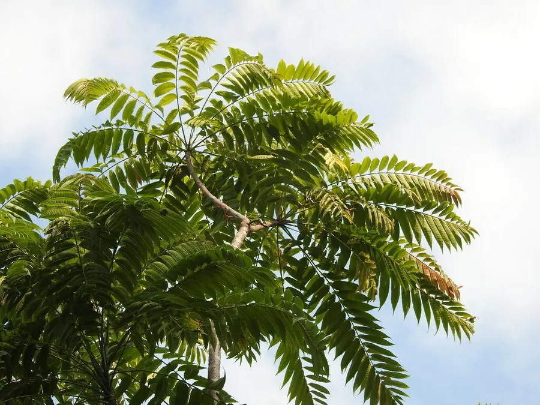

乔木 · 植物界
香椿 Toona sinensis

中国特有的落叶乔木，春季嫩芽紫红芳香，是著名的时令蔬菜“香椿芽”，木材纹理美观，俗称“中国桃花心木”。
- 分类
- 门被子植物门纲木兰纲目无患子目科楝科属香椿属
- 栖息环境
- 海拔 1500 米以下的山坡、村旁与庭院，喜温暖湿润、光照充足
- 地理分布
- 中国中部、南部及西南地区，北自辽宁南至广西均有分布
- 保护级别
- 暂无评估；中国未列入国家重点保护野生植物名录
物种志
香椿为落叶乔木，高可达 25 m，树皮红褐色、呈条片状剥落；偶数羽状复叶，小叶 8–14 对，卵状披针形，边缘具锯齿，揉碎后有浓郁的特殊香气。花期 5–6 月，圆锥花序顶生或腋生，花白色、芳香；蒴果椭圆状倒卵形，成熟时褐色并开裂，种子扁平、具翅，可随风传播。
香椿原产中国中部、南部及西南地区，北自辽宁南至广西均有分布，喜光、喜温暖湿润，适宜深厚肥沃、排水良好的土壤。春季嫩芽紫红色、香气浓郁，是北方与江南春季的时令野菜“香椿芽”，可炒蛋、凉拌或腌制；根皮、树皮与果实均可入药，中药“椿白皮”能清热燥湿。木材纹理美观、色泽红褐、耐腐，被称为“中国桃花心木”，可供家具、建筑与工艺品用。
形态与习性
- 株高可达 25 m，树皮红褐色剥落
- 花期5–6 月，花白色芳香
- 果期9–10 月，蒴果开裂
- 光照喜光，不耐长期荫蔽
- 水分喜湿润，怕积水
- 土壤深厚肥沃、排水良好的壤土
- 主要用途香椿芽食用、家具与建筑用材、椿白皮入药
趣味知识
- 香椿的嫩芽紫红发亮、香气浓郁，是春季最受期待的时令野菜之一。
- 香椿芽入菜前最好先焯水，以降低其中亚硝酸盐的含量。
- 香椿木材红褐色、纹理美观，被称为“中国桃花心木”。
- 香椿与臭椿外形相似，但香椿叶揉碎有香气，臭椿叶揉碎有异味。